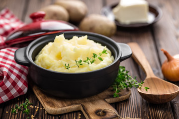

Mashed Potato

Mashed Potatos
Mashed potato or mashed potatoes, colloquially known as mash, is a dish made by mashing boiled or steamed potatoes,
usually with added milk, butter, salt and pepper.
It is generally served as a side dish to meat or vegetables.
Roughly mashed potatoes are sometimes called smashed potatoes.
Description
How to make Mashed Potatos
Ingredients
- 2 pounds baking potatoes, peeled and quartered
- 3 cloves garlic, peeled, or to taste (Optional)
- 1 cup milk
- 2 tablespoons butter
- salt and ground black pepper to taste
Steps
- Bring a large pot of salted water to a boil.
Add potatoes and garlic, lower heat to medium, and simmer until potatoes are tender, 15 to 20 minutes.
- When the potatoes are almost finished,
heat milk and butter in a small saucepan over low heat until butter is melted.
- Drain potatoes and return to the pot. Slowly add warm milk mixture,
blending it in with a potato masher or electric mixer until potatoes are smooth and creamy.